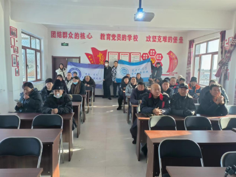
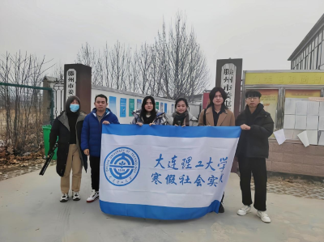
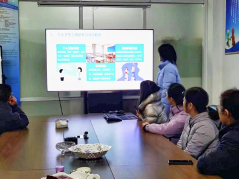
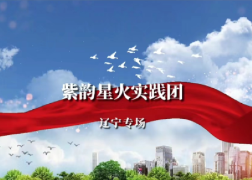
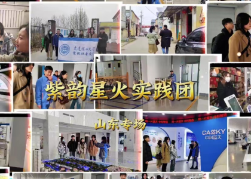
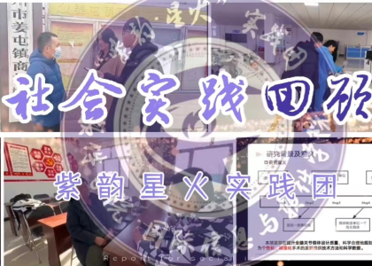

|

紫韵星火·辽宁篇 在当代社会，随着科技的飞速发展和人民生活水平的提高，现代医疗发展已经成为保障人民健康福祉的重要基石。为了提高乡村人民对乡村医疗服务知识的普及程度，增长民生福祉，“紫韵·星火”社会实践团前往辽宁省候贝营子村进行乡村医疗服务知识宣讲。 |

紫韵星火·山东篇 科创兴国的号角唤醒崭新的岁月，迎冬绽放的腊梅书写新春的气息。来自大连理工大学的“紫韵 · 星火”实践团来到了山东省滕州市，以昂扬的青春面貌感受时代变化。以向上的青春姿态发挥自身力量。 · 星火”实践团来到了山东省滕州市，以昂扬的青春面貌感受时代变化。以向上的青春姿态发挥自身力量。 |

紫韵星火·宣讲会集锦 人民群众是国家发展之根本，乡村医疗是国家补贴之重点。为了明晰科技赋能卫生医疗发展的方向，紫韵·星火实践团从基层着手了解当地卫生状况，以线上线下相结合的方式开展主题宣讲活动，围绕村庄医疗资源、健康管理等方面进行了深入浅出的讲解。 |
|  |
紫韵星火·辽宁专场大连理工大学与当地村民携手共建社会实践基地，共同履行社会责任，为乡村振兴注入新的活力。实践团成员走进候贝营子村党支部，开展了一系列深入人心的社会实践活动，针对医疗、健康、农业等领域的议题，与村民们展开深度交流，传播先进的科技与知识，为候贝营子村的发展提供专业助力。 |
|
紫韵星火·山东专场大连理工大学与携手商村、中科蓝天、山森数控共同建立社会实践基地，积极履行社会责任，为乡村振兴增添新的活力。实践团成员深入商村，与村民们展开了深入交流，走进企业，发掘经济发展的重要脉络，传播先进科技与知识，为乡村振兴提供专业支持。 |
 | |
|  |
紫韵星火·实践回顾“紫韵·星火”社会实践团将专业知识应用于实践，以青年力量推进乡村振兴。实践团携手当地村民、龙头企业、政府机关共同推进乡村基础卫生建设工作，实现科技创新赋能医疗下乡，为社会进步贡献大工力量。 |
|
紫韵·星火”社会实践团